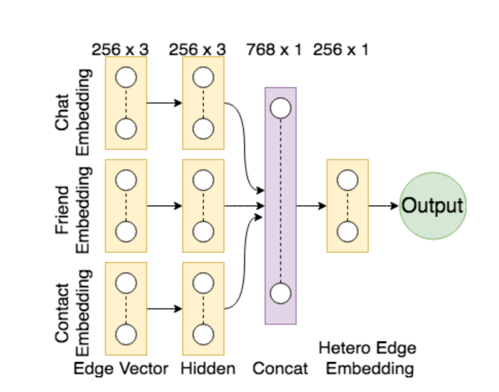
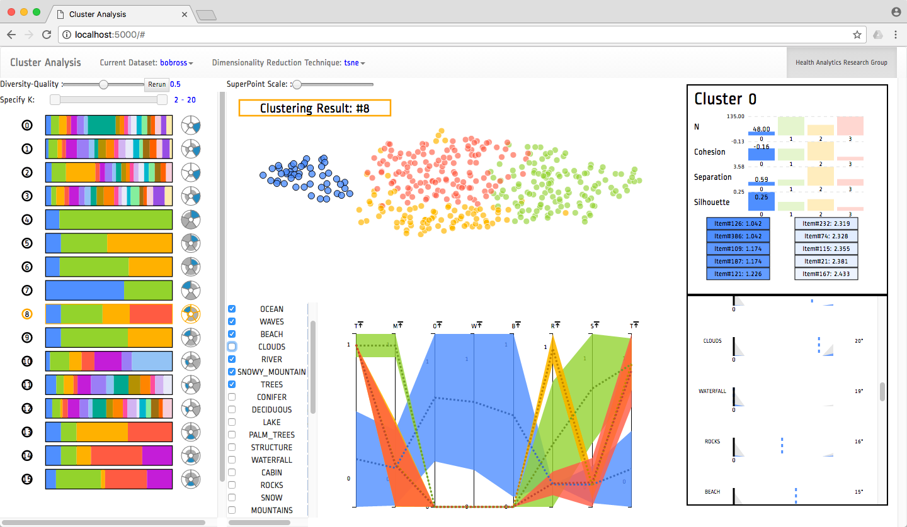
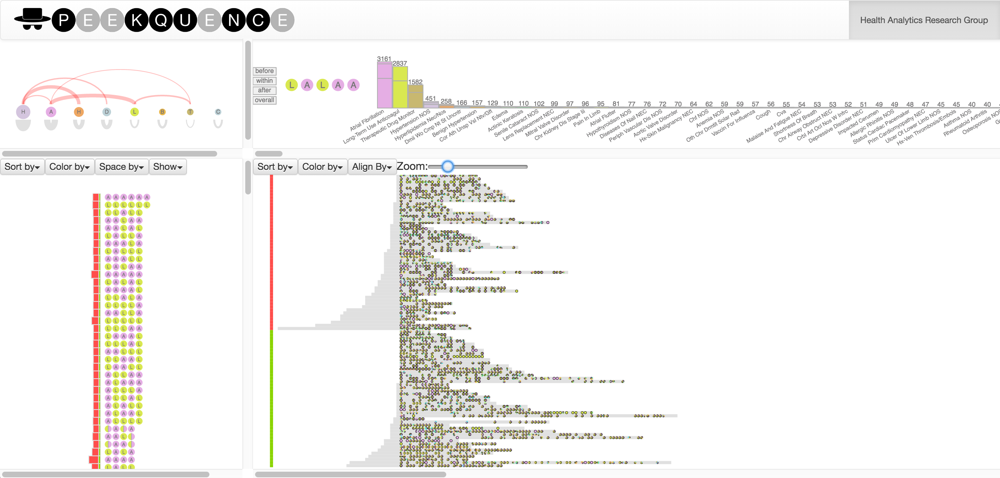
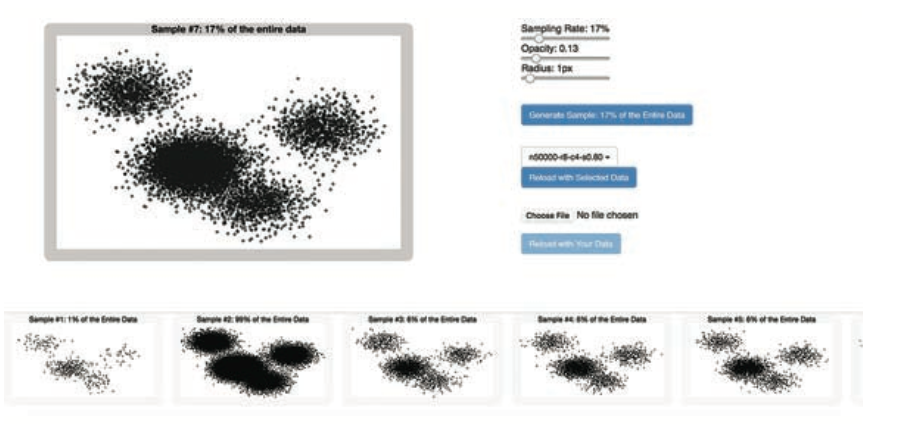
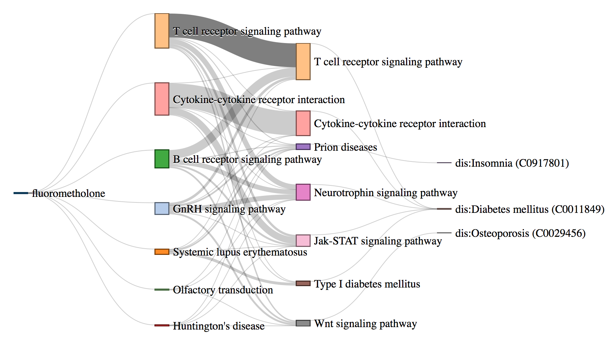
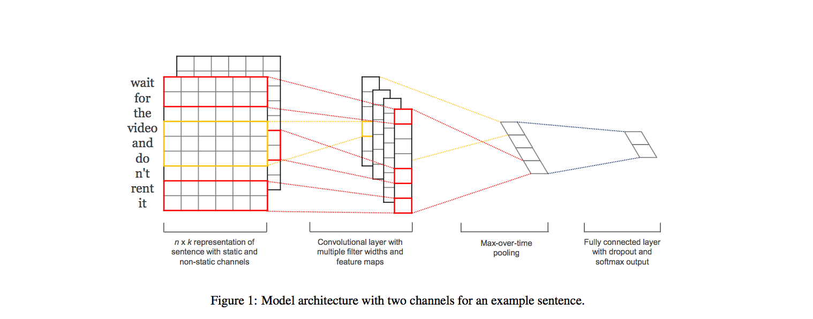
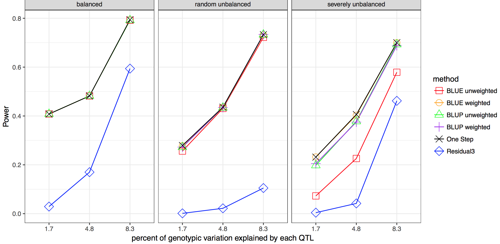
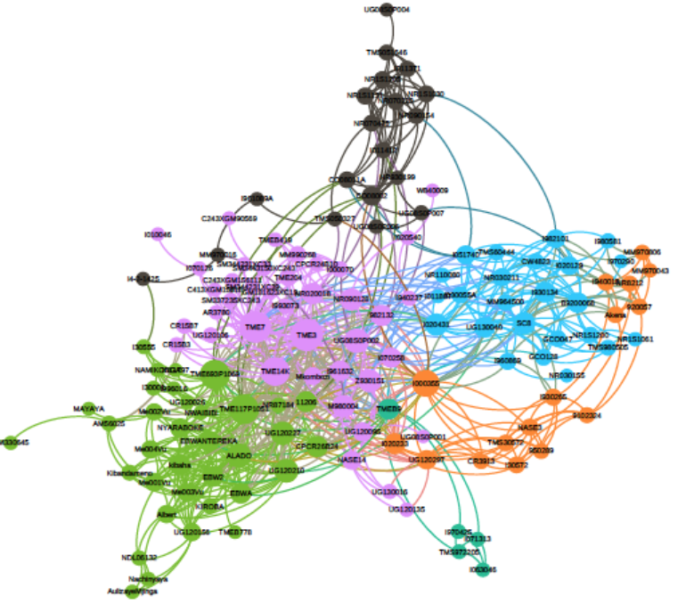
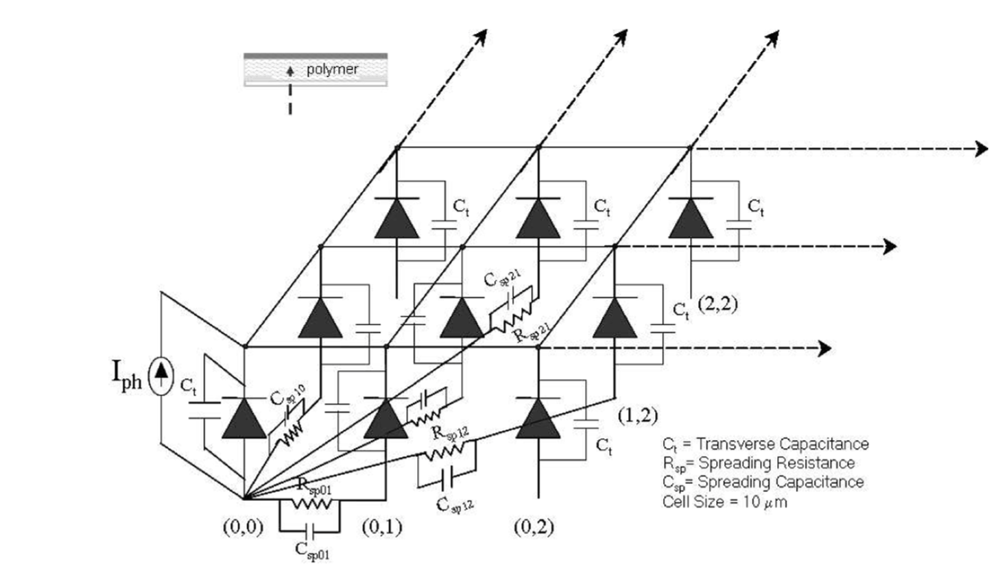

I'm a machine learning and data visualization researcher. I am currently a senior machine learning scientist at Hike in New Delhi. Previously, I was a researcher in the HealthCare Analytics Research Group at IBM TJ Watson Research Center in New York. I also worked Buckler Lab @ Cornell University as a Quantitative Researcher, where I worked on the problems at the intersection of machine learning and bioinformatics.
My research interests are in machine learning, data visualization, Human Computer Interaction and computational sciences.
I advise start-ups and companies on building and scaling data science and machine learning teams. Email me for consulation and discussion. I'm also available for speaking.
I hold a Masters in Theoretical Physics from University of Cambridge in the UK, where I studied string theory and black holes in higher dimensions. I also have an M.S. in pure mathematics (PhD drop-out) from Kansas State University, where I studied algebraic & differential geometry (particularly Donaldson-Thomas Invariants and their wall crossing phenomenon) with Yan Soibelman.
I have colaborated with Machine Learning Lab at K-State, have held research positions at Tata Institute of Fundamental Research - Mumbai, and at Jawaharlal Nehru Center for Advanced Scientific Research - Bangalore.
I am a voracious reader and an avid traveler. I hang out at the local coffee shops, which serve as my office away from office.
Research
Deep Learning on Graphs

An interesting research problem to find a representation of the graph that can be utilized by a machine learning model. Instead of the global summary attributes of the graph, finding a dense representation of the graph that incorporates the local structural information. The idea is to learn a mapping from the graph to a low- dimensional real vector space such that the structural attributes of the graph translate to the geometrical properties in the embedding space. Neural network models have been very succesful at this task. Graph representation learning on heterogeneous networks offers many difficulties, and is not obvious how one can build en embedding that uses the heterogeniety. We propose a method to mine net- work representation that effectively exploits edge heterogeneity in multi-graphs. As an application, we studied the friend recommendation in social networks which is modeled on link prediction in the network.
Visual analysis of clustering

Clustering is a common type of unsupervised machine learning that can be useful for summarizing and aggregating complex multi-dimensional data. However, data can be clustered in many ways, and there exist a large body of algorithms designed to reveal different patterns. In practice, it is quite difficult for data scientists to choose and parameterize algorithms to get the clustering results relevant for their dataset and analytical tasks. To alleviate this problem, we built a clustering analysis system that clusters data using a variety of clustering techniques and parameters and then recommends good clustering results utilizing a variety of quality scoring metrics. Our visual user interface allows users to find high quality clustering results, explore the clusters using a variety of coordinated visualization techniques, and select the cluster result that best suits their task.
Papers
- Bum Chul Kwon, Ben Eysenbach, Janu Verma, Kenney Ng, Christopher deFilippi, Walter F. Stewart, and Adam Perer Clustervision: Visual Supervision of Unsupervised Clustering, IEEE Vis, October 2017.
- Bum Chul Kwon, Ben Eysenbach, Janu Verma, Kenney Ng, and Adam Perer Interactive Unsupervised Clustering with Clustervision, KDD IDEA Workshop, August 2017
Event Sequence Mining and Visualization

Exploring event sequences in big data is challenging. Though many mining algorithms have been developed to derive the most frequently occurring and the most meaningful sequential patterns, it is yet difficult to make sense of the results. To tackle the problem, we introduce a visual analytics approach - Peekquence, which aims to increase the interpretability of machine learning-based sequence mining algorithms.
Papers
- Bum Chul Kwon, Janu Verma, Adam Perer Peekquence: Visual Analytics for Event Sequence Data, KDD IDEA Workshop August 2016.
- Adam Perer, Bum Chul Kwon, Janu Verma The Critical Role of Data Mining for Analyzing Real-World Event Sequences, IEEE Vis Workshop on Temporal and Sequential Event Analysis, October 2016
- Bum Chul Kwon, Janu Verma, Adam Perer Peeking into Patterns of Clinical Event Sequences with Peekquence, Visual Analytics in HealthCare (VAHC) Novemeber 2016
Sampling in Visual Analytics

Visual analytics is a powerful tool for exploring and understanding data, as it augments human cognition by leveraging visual perception and facilitates interactive, iterative analysis workflow, which is essential for data experimentation. The visualization of large datasets, however, poses several challenges. First, displaying a large number of data items can create visual clutter, challenging perception and, hence, visual analysis. Here, we make a case for sampling as an essential tool for scalable interactive visual analysis
Biological Pathway Analysis

Biological interpretation and understanding of machine learning based predictive models are highly desirable in healthcare analytics. Predicting Adverse Drug Reactions (ADRs) is extremely important for safe and precision medicine. There are various machine learning based approaches to predict adverse reactions for drugs. These models, though effective, lack biological interpretation and are treated as black-boxes. We propose DrugPathSeeker, a novel in- teractive user interface that integrates the machine learning model, database query API, statistical analysis, and visualization for ex- ploring and understanding of the association between drugs and ADRs.
Text Classification using word2vec and Convolution Neural Networks

We studied various approaches for categorizing healthcare forum messages into one of seven different categories, based on the message text. We investigated the performance of several standard text classification algorithms on this task. We also explored recently proposed convolution neural network architectures that have been demonstrated to be effective at classifying short texts. We found that an ensemble of the explored models performed better than any of the individual models. Our ensemble was ranked first among the 56 runs submitted to the ICHI Data Challenge 2016.
Weighted Mixed Linear Model for GWAS

Linear mixed models are widely used in humans, animals, and plants to conduct genome-wide association studies (GWAS). Two-stage methods have been proposed to reduce the complexity and increase the computational speed of whole-genome scans. The first stage of the analysis fits raw data to a model including environment and line effects, but no individual marker effects. The second stage involves the whole genome scan of marker tests using summary values for each line as the dependent variable. Missing data and unbalanced experimental designs can result in biased estimates of marker association effects from two-stage analyses. In this study, we developed a weighted two-stage analysis to reduce bias and improve power of GWAS while maintaining the computational efficiency of two-stage analyses.
Genetic Load in Cassava

Cassava (Manihot esculenta Crantz) is an important staple food crop in Africa and South America, however, ubiquitous deleterious mutations may severely reduce its fitness. To evaluate the deleterious mutations in cassava genome, we constructed a cassava haplotype map by deep sequencing of 241 diverse accessions and identified over 30 million variants. While domestication modified starch and ketone metabolism pathways for human consumption, the concomitant bottleneck and clonal propagation resulted in a large proportion of fixed deleterious amino acid changes, raised the number of deleterious mutations by 24%, and shifted the mutational burden towards common variants. Purging deleterious mutations were ineffective due to the lack of recombination.
Papers
- Punna Ramu, Williams Esuma, Robert Kawuki, Ismail Rabbi, Chiedozie Egesi, Jessen V Bredeson, Rebecca Bart, Janu Verma, Edward Buckler, Fei Lu Cassava haplotype map highlights fixation of deleterious mutations during clonal propagation, Nature Genetics, April 2017
- R. Punna, F. Lu, J.Verma, E. Buckler Identifying genetic load by whole genome and transcriptome sequencing of Cassava breading lines, Plant and Animal Genomics XXIII 2015, San Diego, CA
Lateral Photovoltaic Effect in Organic Semiconductors

We present here a discrete circuit spreading impedance network model for highly disordered semicon- ducting polymeric Schottky devices. Qualitative arguments are presented to correlate the parameters of the spreading function, which represents the network connectivity in the model, to the underlying morphology of the polymer. A detailed theoretical study of the lateral charge transport in organic Schottky devices is carried out using the model. We observe and analyze the dependence of the lateral photovoltage on the polymer morphology, incident power, material specific Schottky junc- tion parameters and the modulation frequency.
Papers
- D. Kabra, J. Verma, N.S. Vidhyadhiraja, K.S. Narayan Model for study of lateral photovolatic effect in ploymeric semiconductors, IEEE Sensors Journal Vol.8, Issue 10 (1663)
- J. Verma, D. Kabra, N.S. Vidhyadhiraja, K.S. Narayan A study of charge carrier transport in disordered organic films,MESODIS 2006, Kanpur India
Talks
Beyond QWERTY: Solving the Input Problem of India, Future of Work, YourStory, Bengaluru, Feb 2019 post
Nuts and Bolts of Image Recognition, Software Technology Park of India, Mohali, Chandigarh, Feb 2019 Slides
ImageNet and Image Recognition, Innvovicon, Bharti Vidya Peeth, New Delhi, Feb 2019 Slides
Case for Open Data in Machine Learning, Panjab University, Chandigarh, Sept 2018 Slides
Social Bias in Machine Learning, PyData Delhi Annual Conference 2018, August 2018 Slides
Word Embeddings and NLP, Netaji Subhash Insititute of Technology, April 2018 Slides
Data Visualization; Theory and Practices, PyData Delhi Meetup, Feb 2018 Slides
Data Driven Healthcare, Indraprastha Institute of Information Technology (IIIT), New Delhi, Dec 2017 Slides
Network Visualizations, Annual AICTE Seminar on Machine Learning and HCI, Maharaja Surajmal Institute of Technology, New Delhi, Nov 2017 Slides
Improving Healthcare with Data Science, Favebook Dev Circle, New Delhi, Oct 2017 Slides
Data Science in Healthcare, Cluster Innovation Center, University of Delhi, Sept 2017 Slides
Understanding Clustering: Supervising the Unsupervised, PyData Delhi, Sept 2017 Slides
Word Vector Representations (word2vec) and Text Classification, ML-India Gurgaon, Jan 2017, Slides
Case for Data Visualization, DataViz Delhi, Nov 2016 Slides
Data Science in an Early Start-Up, Round One, New Delhi, Oct 2016
Machine learning, data visualization, and software development in computational biology, IBM Research, Sept 2015
Machine Learning with Scikit-Learn, Cornell Data Science Club, Sept 2014
Author identification in double blind review process, Institute of Biotechnology, Cornell University, Jan 2014
Moduli Space of Multi-centered Black Holes and Quiver Representations, University of Kansas, May 2013
Motivic Donaldson-Thomas invariants and Kac Conjecture, Institute of Mathematical Sciences, Chennai, Dec 2012